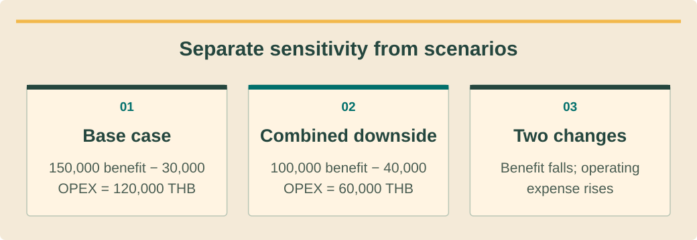

Finance and investment analysisכספים וניתוח השקעותการเงินและวิเคราะห์การลงทุน · 8 / 9
Sensitivity, procurement and cash riskרגישות רכש וסיכון מזומןความไว จัดซื้อ และความเสี่ยงเงินสด
Stress-test the decision and control commitments before money leaves.לבחון החלטה בתנאי לחץ ולשלוט בהתחייבויות לפני תשלום.ทดสอบการตัดสินและควบคุมภาระก่อนจ่ายเงิน
What you will be able to doמה תדעו לעשותสิ่งที่คุณจะทำได้
- Separate single-variable sensitivity from scenarios.להפריד רגישות יחידה מתרחישים.แยกความไวตัวเดียวกับหลายสถานการณ์
- Assess downside cash and procurement exposure.לבחון מזומן שלילי וחשיפת רכש.ประเมินเงินด้านลบและเสี่ยงจัดซื้อ
- Set evidence-based approval triggers.להגדיר ספי אישור מבוססי ראיות.กำหนดเหตุอนุมัติตามหลักฐาน
Change one input, then several coherentlyשינוי קלט אחד ואז כמה בעקביותเปลี่ยนทีละตัวแล้วหลายตัวอย่างสอดคล้อง
A sensitivity changes one input while holding others fixed to reveal its influence. A scenario combines plausible related changes, such as lower occupancy and reduced daytime self-consumption. Label these differently so a reader knows what the comparison is testing.רגישות משנה קלט אחד כשאחרים קבועים כדי לגלות השפעתו. תרחיש משלב שינויים קשורים כגון תפוסה וצריכה עצמית נמוכות. סמנו אחרת כדי שהקורא יבין מה נבדק.ความไวเปลี่ยนตัวเดียวคงอื่นเพื่อเห็นอิทธิพล สถานการณ์รวมการเปลี่ยนที่สัมพันธ์ เช่น เข้าพักน้อยและใช้เองกลางวันลด ระบุแยกให้ผู้อ่านรู้ว่ากำลังทดสอบอะไร
Use ranges grounded in measurements, quotes or explicit training assumptions. Do not assign probabilities because a spreadsheet has a probability column. Record why the downside is plausible and what evidence would narrow it; an unlabeled pessimistic number is no more rigorous than an optimistic one.השתמשו בטווחים ממדידות, הצעות או הנחות לימוד מפורשות. אין להמציא הסתברות בגלל עמודה. תעדו סבירות תרחיש ומידע שיצמצמו; מספר פסימי לא מסומן אינו קפדני יותר מאופטימי.ใช้ช่วงจากวัด ราคา หรือสมมติฝึกชัด อย่าใส่โอกาสเพราะตารางมีช่องความน่าจะเป็น บอกเหตุที่ด้านลบเป็นไปได้และข้อมูลช่วยลดความไม่แน่ ตัวเลขลบไม่มีป้ายไม่ได้รอบคอบกว่าบวก
Prioritize variables that can change the decisionתעדוף משתנים המשנים החלטהให้ความสำคัญตัวที่เปลี่ยนคำตัดสิน
Test self-consumption, production, tariff assumptions, operating cost, replacement timing, commissioning delay and FX where relevant. Separate a technical yield change from a tariff change. Keep approval-dependent export income out of the unconditional base case unless its applicable terms are evidenced.בדקו צריכה עצמית, ייצור, תעריף, תפעול, החלפה, עיכוב הפעלה ומטבע. הפרידו שינוי תפוקה מתעריף. הכנסה מעודפים תלויי אישור אינה בבסיס בלתי מותנה ללא תנאים מאומתים.ทดสอบใช้เอง ผลิต อัตรา ค่าเดินงาน เวลาเปลี่ยน เปิดช้า และFXเมื่อเกี่ยวข้อง แยกผลผลิตเทคนิคจากอัตรา รายรับขายไฟที่ต้องอนุมัติไม่อยู่ฐานไม่มีเงื่อนไขเว้นมีหลักฐานเงื่อนไขจริง
For each stress show NPV, minimum cash and debt coverage where applicable, not only payback. A scenario can remain profitable over its life while failing a near-term payment. Identify which input deserves better evidence before spending on a more detailed model.לכל לחץ הציגוNPV, מזומן מזערי וכיסוי חוב כשחל ולא רק החזר. תרחיש יכול להיות רווחי לאורך חיים ולהיכשל בתשלום קרוב. זהו קלט שדורש ראיה לפני השקעה בפירוט מודל.แต่ละทดสอบแสดงNPV เงินต่ำสุด และครอบคลุมหนี้เมื่อมี ไม่ใช่คืนทุนอย่างเดียว อาจคุ้มตลอดอายุแต่จ่ายใกล้ๆไม่ไหว ระบุตัวที่ควรหาหลักฐานเพิ่มก่อนทำโมเดลละเอียด
See the ideaרואים את הרעיוןมองเห็นแนวคิด
Separate sensitivity from scenariosמפרידים רגישות מתרחישיםแยกความไวจากสถานการณ์

Read the diagram as textקריאת התרשים כטקסטอ่านแผนภาพเป็นข้อความ
- Base caseתרחיש בסיסกรณีฐาน — 150,000 benefit − 30,000 OPEX = 120,000 THB150,000 תועלת פחות 30,000 הוצאה = 120,000 באטประโยชน์ 150,000 − OPEX 30,000 = 120,000 บาท
- Combined downsideהרעה משולבתกรณีแย่รวมหลายปัจจัย — 100,000 benefit − 40,000 OPEX = 60,000 THB100,000 תועלת פחות 40,000 הוצאה = 60,000 באטประโยชน์ 100,000 − OPEX 40,000 = 60,000 บาท
- Two changesשני שינוייםเปลี่ยนสองปัจจัย — Benefit falls; operating expense risesהתועלת יורדת; ההוצאה התפעולית עולהประโยชน์ลด ค่าใช้จ่ายดำเนินงานเพิ่ม
Procurement converts assumptions into obligationsרכש הופך הנחות להתחייבויותจัดซื้อเปลี่ยนสมมติเป็นภาระ
Before a supplier commitment, verify accepted scope, quote validity, currency, delivery terms, payment milestones and approval dependencies. Match the equipment version to the customer contract. A discount for early payment may create a larger loss if design or customer acceptance is unresolved.לפני התחייבות ספק אמתו היקף, תוקף, מטבע, אספקה, תשלומים ותלויות אישור. התאימו ציוד לחוזה. הנחת תשלום מוקדם עלולה ליצור הפסד גדול אם תכנון או קבלה פתוחים.ก่อนผูกพันผู้ขายตรวจขอบเขต อายุราคา สกุล เงื่อนไขส่ง งวด และสิ่งรออนุมัติ รุ่นเครื่องต้องตรงสัญญาลูกค้า ส่วนลดจ่ายก่อนอาจเสียมากกว่าถ้าแบบหรือการยอมรับยังไม่จบ
Use an internal approval record for purchase amount, owner and evidence checked. Confirm unusual payment-detail changes through an independently verified contact. Track outstanding deposits and delivery evidence; an advance paid is not equipment received or customer acceptance achieved.השתמשו ברישום אישור פנימי לסכום, אחראי ובדיקות. אמתו שינוי פרטי תשלום חריג דרך איש קשר מאומת בנפרד. עקבו מקדמות וראיות אספקה; מקדמה אינה ציוד שהתקבל או קבלת לקוח.ใช้บันทึกอนุมัติภายในยอด ผู้รับผิดชอบ และหลักฐานที่ตรวจ ยืนยันเปลี่ยนบัญชีจ่ายผิดปกติผ่านผู้ติดต่อที่ตรวจอิสระ ติดตามมัดจำกับหลักฐานส่ง เงินล่วงหน้าไม่ใช่รับเครื่องหรือรับงานลูกค้าแล้ว
Price change orders before recognizing marginתמחור שינויים לפני הכרה בתרומהคิดงานเพิ่มก่อนนับกำไร
A scope change can affect engineering, labor, equipment, tax, schedule and customer downtime. Record the incremental revenue and cost together, including whether payment is approved and collectible. Unapproved extra work is exposure, not guaranteed additional profit.שינוי היקף משפיע על הנדסה, עבודה, ציוד, מס, לוח והשבתה. תעדו הכנסה ועלות נוספות יחד כולל אישור וגבייה. עבודה נוספת לא מאושרת היא חשיפה ולא רווח מובטח.เปลี่ยนขอบเขตอาจกระทบวิศวกร แรง เครื่อง ภาษี เวลา และหยุดลูกค้า บันทึกรับและต้นทุนเพิ่มคู่ พร้อมอนุมัติและเก็บได้ งานเพิ่มไม่อนุมัติคือเสี่ยง ไม่ใช่กำไรเพิ่มแน่
Set a practical trigger such as “reapprove if validated downside exceeds the available cash buffer” using the organization’s actual policy. Name the decision owner and required correction. Do not invent company-wide credit limits or imply that this training page enforces approvals in software.קבעו סף כגון ״אישור מחדש אם תרחיש מאומת חורג מכרית מזומן״ לפי מדיניות אמיתית. ציינו אחראי ותיקון. אין להמציא מגבלות אשראי חברה או לרמוז שהשיעור אוכף אישורים בתוכנה.ตั้งเหตุเช่น “อนุมัติใหม่เมื่อด้านลบที่ตรวจแล้วเกินเงินกันชน” ตามนโยบายจริง ระบุผู้ตัดสินและสิ่งแก้ อย่าสร้างวงเงินเครดิตบริษัทหรือสื่อว่าบทเรียนบังคับอนุมัติในซอฟต์แวร์
Worked exampleדוגמה פתורהตัวอย่างพร้อมวิธีทำ
Operating benefit falls faster than expectedתועלת תפעולית יורדת מהר מהצפויประโยชน์เดินงานลดเร็วกว่าคิด
Fictional annual gross benefit 150,000 THB and OPEX 30,000. Downside gross benefit 100,000 and OPEX 40,000; other items unchanged and explicitly excluded.תועלת שנתית לדוגמה150,000 ותפעול30,000 באט. בשלילי תועלת100,000 ותפעול40,000; היתר קבוע ומוחרג במפורש.ประโยชน์รวมปีสมมติ150,000บาท OPEX30,000 ด้านลบรวม100,000 OPEX40,000 รายการอื่นคงเดิมและตัดออกชัด
- Base operating cash benefit=120,000.בסיס תועלת תפעולית120,000.ฐานเงินเดินงาน120,000
- Downside operating cash benefit=60,000.בשלילי תועלת60,000.ด้านลบเงินเดินงาน60,000
- A 33.3% gross-benefit decline plus higher OPEX halves operating cash benefit.ירידת ברוטו33.3% עם תפעול גבוה חוצה תועלת מזומן.ประโยชน์รวมลด33.3%และOPEXเพิ่มทำให้เงินเดินงานเหลือครึ่ง
The scenario combines two changes; it is not a single-variable sensitivity. Any debt or tax analysis must be added consistently before calling the remaining amount equity cash.התרחיש משלב שני שינויים ואינו רגישות יחידה. יש להוסיף חוב ומס בעקביות לפני כינוי היתרה תזרים הון.กรณีนี้รวมสองการเปลี่ยน ไม่ใช่ความไวตัวเดียว ต้องเพิ่มหนี้และภาษีอย่างตรงกันก่อนเรียกเงินเหลือว่าทุนเจ้าของ
Your turnעכשיו מתרגליםถึงเวลาฝึกฝน
A premature purchase discountהנחת רכש מוקדמתส่วนลดซื้อก่อนพร้อม
A fictional supplier offersTHB 10,000 off for immediate payment, but an unresolved design change could requireTHB 40,000 of replacement equipment. Prepare a decision note without inventing probabilities.ספק מציע10,000 הנחה לתשלום מיידי אך שינוי תכנון פתוח עשוי לדרוש40,000 ציוד חלופי. כתבו החלטה בלי להמציא הסתברויות.ผู้ขายสมมติลด10,000ถ้าจ่ายทันที แต่แบบยังค้างอาจต้องเปลี่ยนเครื่อง40,000 เขียนบันทึกตัดสินโดยไม่สร้างโอกาสเกิด
- A best/downside commitment comparison.השוואת התחייבות טובה ושלילית.เทียบผูกพันกรณีดีและลบ
- An evidence request and decision owner.בקשת ראיה ואחראי החלטה.คำขอหลักฐานและผู้ตัดสิน
Compare with the model answerהשוו לפתרון לדוגמהเปรียบเทียบกับแนวคำตอบ
Show the 10,000 possible saving against the 40,000 possible rework exposure and any deposit/cancellation terms. Request design resolution and written supplier conditions before commitment. Without justified probabilities, do not compute a fake expected value. Escalate timing if the discount expires before evidence arrives.הציגו חיסכון אפשרי10,000 מול חשיפת עבודה חוזרת40,000 ותנאי מקדמה וביטול. בקשו פתרון תכנון ותנאי ספק בכתב. בלי הסתברות מנומקת אין ערך צפוי מזויף. הסלימו תזמון אם הנחה מסתיימת קודם.แสดงประหยัดอาจได้10,000เทียบเสี่ยงทำซ้ำ40,000และเงื่อนไขมัดจำ/ยกเลิก ขอแบบจบและเงื่อนไขผู้ขายเป็นลายลักษณ์ก่อนผูกพัน ไม่มีโอกาสที่มีเหตุอย่าคำนวณค่าคาดหมายปลอม ส่งตัดสินเวลาถ้าส่วนลดหมดก่อนหลักฐาน
Your exercise notebookמחברת התרגול שלכםสมุดแบบฝึกหัดของคุณ
Write your reasoning and the evidence you would collect. Notes stay in this browser. Export a copy to share with your trainer.כתבו את דרך החשיבה ואת הראיות שתאספו. המחברת נשמרת בדפדפן הזה. הורידו עותק כדי להעביר לבדיקה של אחראי ההדרכה.เขียนเหตุผลและหลักฐานที่จะรวบรวม บันทึกเก็บในเบราว์เซอร์นี้ ส่งออกสำเนาเพื่อส่งให้ผู้ฝึกสอนตรวจ
Before handing overלפני שמעבירים הלאהก่อนส่งมอบงาน
- Label sensitivity versus scenario.לסמן רגישות מול תרחיש.ระบุความไวหรือสถานการณ์
- Check cash before commitments.לבדוק מזומן לפני התחייבות.ตรวจเงินก่อนผูกพัน
- Require approved change-order scope.לדרוש היקף שינוי מאושר.ต้องมีขอบเขตงานเพิ่มอนุมัติ
Watch and applyצופים ומיישמיםดูแล้วนำไปใช้
A professional demonstrationהדגמה מקצועיתการสาธิตจากผู้เชี่ยวชาญ
Before pressing playלפני שמפעיליםก่อนกดเล่น
Notice why selecting the cash-flow perspective matters before comparing model results.שימו לב לחשיבות בחירת נקודת המבט בתזרים לפני השוואת תוצאות מודל.สังเกตว่าทำไมต้องเลือกมุมมองกระแสเงินสดก่อนเทียบผลแบบจำลอง
Financial Models for Utility-scale Projects in SAM
Official SAM financial-model webinar with utility-scale ownership and cash-flow perspectives. Transfer modelling concepts carefully; US tax structures and utility PPA terms are not Thai rooftop defaults.וובינר פיננסי רשמי של SAM על בעלות ותזרים בפרויקטים בקנה מידה גדול. יש ליישם בזהירות את עקרונות המידול; מבני המס והסכמי החשמל בארה״ב אינם ברירת מחדל לגגות בתאילנד.เว็บบินาร์แบบจำลองการเงินทางการของ SAM ว่าด้วยความเป็นเจ้าของและกระแสเงินสดโครงการขนาดใหญ่ นำหลักการมาใช้อย่างระมัดระวัง โครงสร้างภาษีและ PPA สหรัฐฯ ไม่ใช่ค่าตั้งต้นสำหรับหลังคาในไทย
Connect it to this lessonמחברים לחומר בשיעורเชื่อมกับบทเรียนนี้
Keep scenario changes and excluded costs explicit so comparisons remain meaningful.מציגים שינויי תרחיש ועלויות מוחרגות במפורש כדי שההשוואה תהיה משמעותית.แสดงปัจจัยที่เปลี่ยนและต้นทุนที่ไม่รวมให้ชัดเพื่อให้การเทียบมีความหมาย
Pause and explainעוצרים ומסביריםหยุดแล้วอธิบาย
How would you isolate only the OPEX effect in a second model run?איך תבודדו רק את השפעת ההוצאה התפעולית בהרצת מודל נוספת?จะทดสอบเฉพาะผลของ OPEX ในการรันแบบจำลองครั้งที่สองอย่างไร?
The guidance is available in all three languages. The video keeps the publisher’s original audio; captions and translations depend on the publisher and YouTube. If the embedded player is unavailable, use the source link.הנחיות הצפייה זמינות בשלוש השפות. הסרטון נשאר בשפת המקור; כתוביות ותרגום תלויים במפרסם וב־YouTube. אם הנגן אינו זמין, פתחו את קישור המקור.คำแนะนำมีครบสามภาษา วิดีโอใช้เสียงต้นฉบับ คำบรรยายและการแปลขึ้นกับผู้เผยแพร่และ YouTube หากเครื่องเล่นใช้ไม่ได้ให้เปิดลิงก์ต้นฉบับ
Check your understanding · 80% to passבדיקת הבנה · ציון מעבר 80%ตรวจความเข้าใจ · ผ่านที่ 80%
Sources and review datesמקורות ותאריכי בדיקהแหล่งข้อมูลและวันที่ตรวจสอบ
- SAM Financial Models
Financial modeling perspectives; replace US defaults with verified project inputs.נקודות מבט במודל כספי; להחליף ברירות מחדל אמריקאיות בקלט מאומת.มุมโมเดลการเงิน แทนค่าตั้งต้นสหรัฐด้วยข้อมูลโครงการยืนยัน
- Net Present Value
Discounted cash-flow interpretation; forecasts remain assumption-dependent.פירוש תזרים מהוון; תחזית תלויה בהנחות.ตีความกระแสคิดลด คาดการณ์ยังขึ้นกับสมมติฐาน
- Debt and Equity
Debt/equity and DSCR definitions; actual lender terms determine approval.הגדרות חוב, הון ו־DSCR; תנאי מלווה בפועל קובעים אישור.นิยามหนี้ ทุน และDSCR เงื่อนไขผู้ให้กู้จริงกำหนดอนุมัติ
- Buying a House with Solar Panels
Ownership, records and handover diligence; no US rules imported to Thailand.בדיקות בעלות, תיעוד ומסירה; ללא החלת כללים אמריקאיים בתאילנד.ตรวจเจ้าของ เอกสาร และส่งมอบ ไม่ยกกฎสหรัฐมาใช้ไทย
Reading and quizzes build knowledge. Field work and practical sign-off require the responsible qualified professional.קריאה וחידונים בונים ידע. עבודת שטח ואישור כשירות מעשית נעשים בהנחיית בעל המקצוע המוסמך והאחראי.การอ่านและแบบทดสอบสร้างความรู้ งานภาคสนามและการรับรองความสามารถปฏิบัติต้องอยู่ภายใต้ผู้เชี่ยวชาญที่มีคุณสมบัติและรับผิดชอบ